VitalChain VITALCHAIN 旨在为投资者提供投资未来的可能性，因此对于我们的项目，我们希望这枚代币能够提供有关其背后所有项目的财务数据，100% 透明。 VITALCHAIN 将得到 13 个金融
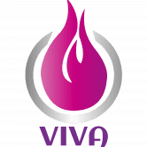 Viva.insure 主要特点： 3 名管理员（90%+ 正常运行时间支持） 委托农业 自动流动性 自动刻录 没有收获锁定 反鲸 哈肯审计 前 2 周所有游泳池和农场的 0% 存款费 未来推荐计
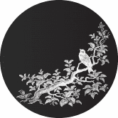 Vive La Bouje 在 Bouje Finance 的成功基础上，Vive La Bouje 是基于 Fantom 区块链的第二代单产农业平台，旨在实现积极稳定的价格走势。利用称为 APR 重置的新时代系统（受 Swift Finance 启发）。对
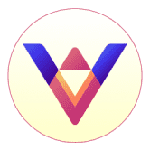 ViXA.Finance ViXA.FiNANCE 是币安智能链上的第一个高收益农业和 Staking。 为什么选择 ViXA 金融？ 2,000 ViXA 初始供应 100% ViXA-BNB LP 锁定 没有团队代币 高产农场 高安全性 http://ViXA.Finance 将在区块开始其耕作
Vodka Token VODKA 代币 – 基于 DeFi 的可收藏的赚取 NFT 游戏。 🍹在游戏中，参与者使用各种机制获得游戏内货币（“VODKA”或伏特加代币），他们“摇”（花费）在 NFT 鸡尾酒
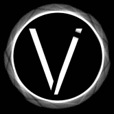 Void Management | Crypto Index Void Management - 一个允许您购买第一个去中心化加密指数的 dapp！ Dapps有什么问题？他们无法执行复杂的任务！ Gas 限制和价格太高，很多交易都会失败。 然而
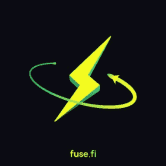 Voltage Voltage 通过对消费者友好的 Fuse Cash 移动应用程序为主流带来前所未有的 DeFi 功能。建立在强大的 Fuse 区块链和生态系统之上，Voltage 使任何人都可以随身携带 DeFi 的
Vortex xxxxxxxxxx Tezos 区块链上领先的一体化去中心化金融协议。使用下一代 DeFi 功能进行交易、赚取和玩游戏，以最大限度地提高收入，同时降低 Vortex AMM 的风险和汽油费。优化的 DeFi
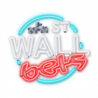 WallStreetBets Dapp WSBDApp 正在创建一个去中心化的应用程序，为我们的社区提供一个工具来表达他们作为散户投资者的意见并与市场互动。WSB 金融民主运动始于 Reddit，并
wARRR wARRR 是一个使用 BSC 代币的 dApp，可直接转换为 ARRR，一种 100% 匿名 P2P 交易加密货币。 wARRR 等于 1 ARRR，并且 wARRR 的当前供应量永远不会超过 ARRR 总供应量的 1
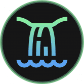 Waterfall Finance Waterfall，Fantom Network 上一种新的稳定和智能的 DeFi 代币，它帮助投资者保护他们的资金，因为我们提供了一个透明的环境，让用户可以无忧地使
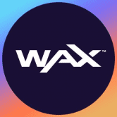 WAX Ethereum Bridge WAX 旨在成为业内最完整、气候友好的 NFT 生态系统，面向希望利用区块链力量的领先品牌、艺术家、创作者和开发人员。顶级品牌（包括 Topps、Capco
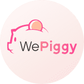 WePiggy WePiggy 是一个开源的、非托管的加密资产借贷市场协议。 在 Wepiggy 的市场中，用户可以存入自己的加密资产来赚取利息，也可以通过支付利息向他人借款。 与 Compo
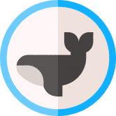 Whales Finance Arbitrum 上的收益农业协议：高收益、低费用、快速交易、安全。 在 Arbitrum 上访问一个强大而严肃的项目的一种有趣方式：将农业与游戏、乐趣、安全和盈利能力联系起来
WigoSwap WigoSwap 是一个 DeFi 平台，它利用 Fantom 网络提供自动做市商（AMM）以及收益农业和 NFT 市场。 WigoSwap 为用户提供 DeFi 行业内快速、全面的协议。 WigoSwap 是一个去中心化交易所 (DE
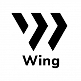 Wing Finance Wing 已经设计并正在构建一个专门针对数字资产借贷市场的 DeFi 平台，支持各种 DeFi 产品之间的跨链协同交互。 Wing 的去中心化治理模式和风险控制机制旨在促进借款人
WOWswap WOWswap 是一种去中心化杠杆交易协议，运行在以太坊、币安智能链、Solana、Avalanche、IoTeX 和 Polygon Network 上。 交易者可以以高达 5 倍的杠杆买卖
Wrap Protocol 什么是包装？ 通过 Wrap，用户发行 wToken（包装代币），代表 Tezos 区块链上的 ERC20 和 ERC721 代币。然后 wTokens 可以在 Tezos 区块链上使用，它们的价值与原始代币挂钩
X-HASH X-Hash Finance (X-HASH) 是一个农场平台，为投资者提供多个高收益池，为传统池提供了另一种选择。 Xhash 是一个面向权益、农场和矿池的 DeFi 平台，它有一个彩票系统，并将添加一
XCAD XCAD Network 是一个通过 Creator 标记化利用 Content Creator 观众价值的平台，观众获得用于粉丝治理的奖励。 我们当然已经跳过了一些障碍来达到这一点，但是我们很高兴现在宣布 Transak 的
Xion Finance Xion Global 通过结合 3 个去中心化应用程序创建了一个电子商务和 DeFi 生态系统。名为 XGT 的跨链代币可用于单产、处理电子商务支付、铸造奖励和简单的价值转移。最大
Xmas Past XMAS PAST 的由来 受到查尔斯狄更斯“圣诞颂歌”的启发 - 圣诞节过去的幽灵，连同 Fantom 生态系统，并与即将到来的欢乐圣诞节保持一致，我们带来了 XMAS PAST 的外观。 圣诞
yearn.finance (YFI) yearn.finance 是一个去中心化收益聚合器，它利用 Compound、Curve、Aave 等其他去中心化金融服务来优化您的代币借贷。它将您的存款分配到收益最高
Yeti Finance Yeti Finance 是一种基于 Avalanche 的尖端去中心化借贷协议，允许用户以 LP 代币、Liquid AVAX 等质押资产和 WETH 等基础资产借入高达 11 倍的利率，以及 20 倍以上的收益稳定币
Yeti Swap YetiSwap 是在 Avalanche 上运行的去中心化交易所 (DEX)，使用与 Uniswap 相同的自动做市 (AMM) 模型，具有称为 YTS 的本地治理代币，该代币完全社区分布，能够交易在以太坊和 Avalanche 上
YetuSwap YetuSwap 是基于币安智能链的泛非去中心化协议。 YetuSwap 拥有自己的治理资产 YETU 代币，用户可以使用它对不同的平台提案和协议变更进行投票。 社区可以在 YetuSwap 上耕种和质押
GRB - TRON Lending 糯米饭团是一个开放的 Defi 协议，用于加密存款和借贷服务。获取最重要的 GRB - TRON Lending dApp 指标触手可及 - 分析下面的深度图表，评估 dApp 在不同时间段的活动并做出快
RUGenerous RuGenerous 协议 AVAX生态系统上的储备货币和DAO RU Generous 是 Avalanche 网络上可用的去中心化储备货币协议和 DAO。RUG 目前在金库中由 AVAX 和 MIM 支持，这为 $RUG 代币价值提
RushMoon RushMoon 是运行在币安智能链上的自动流动性获取收益农场和 AMM 去中心化交易所，具有许多独特和创造性的功能，让您赚取和赢取。我们完全支持 CAKE-LP v2 质押。 RUSH 价格实
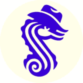 Saddle Finance Saddle 是使用挂钩价值加密资产进行交易和赚钱的最简单方式，从代币化比特币开始。 Saddle 是一个自动化做市商，针对挂钩价值加密资产之间的交易进行了优化。 Saddle 推
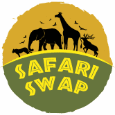 SafariSwap 我们的原生代币第一阶段工作流程 我们的代币称为自然代币 ($Nature)。 目前，它已在 Pancakeswap 上列出。 您可以点击这里购买 $Nature！ （请注意，加
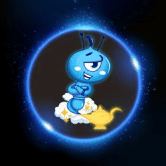 SAFEANT SafeAnt 为什么是静态的？ SafeAnt - 是 AntDeFi 生态系统中的产品。 SafeAnt 将通过观看广告、增加合作伙伴在网站和移动应用程序上的互动等日常任务为用户带来利润。 此外，Saf
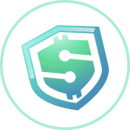 SafeDollar 受到所有前辈的启发和改进，我们很高兴在 Polygon 上展示下一代算法稳定币。 SafeDollar 将是第一个也是唯一一个结合铸币税、通货紧缩协议和合成资产的独特功能的算法稳
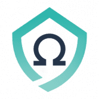 SafeOHM 什么是 SafeOHM？ SOHM 是 SafeMoon 和 OHM 的混合体，OHM 是一种分散的金融储备协议，通过其社区拥有和受保护的国库提供复利。 $SOHM 在国库中有 BNB 支持，赋予其内
 提供支持的 LIFETIME 农业收益")


 是一个农场平台，为投资者提供多个高收益池，为传统池提供了另一种选择。")


 自动做市 (AMM) 交易所。")